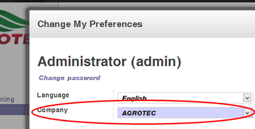
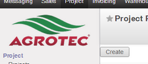
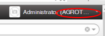

Multi Compañía |
  
|
Multi Compañía |
|
Dependiendo de su implementación y de sus permisos de usuario, puede ser que usted se encuentre en un entorno multi-compañía donde podrá elegir con que empresa estará trabajando en cada momento.
Si en sus preferencias de usuario usted visualiza el campo "Company" entonces se encuentra en un entorno "multi compañía". Las distintas empresas que aparecen en dicho campo son aquellas para las cuales usted tiene permiso.

Cuando usted se encuentra trabajando en OpenERP lo hará con una compañía, y no tendrá acceso a los datos de otras compañías aunque esté en su lista de compañías autorizadas.
Cambio de compañía
Para cambiar de compañía actual simplemente deberá ir a sus preferencias de usuario, elegir la compañía deseada y hacer click en "save".
Si se han configurado diferentes logotipos para cada compañía, usted podrá saber fácilmente bajo qué compañía esta trabajando en cada momento según el logotipo mostrado.

También puede saber bajo que compañía se encuentra trabajando viendo el ángulo superior derecho.

Árbol de compañías
Las compañías pueden presentarse en una estructura de árbol que va a repercutir en como se comporta la visibilidad de los registros.
En nuestro caso se ha configurado el siguiente árbol de compañías:
•Agrihold
oAlta
oAgrotec
oCaelum
oSolaris
Visibilidad de registros en multi compañía
En muchas entidades del sistema usted podrá visualizar un campo "Company", dicho campo indica que empresa es la dueña de dicho registro.
Según sea la configuración de accesos a dicha entidad, pueden darse los siguientes casos:
•Ser visible si el registro no está asociado a ninguna compañía o si está asociado a nuestra compañía.
•Ser visible si el registro no está asociado a ninguna compañía o si está asociado a nuestra compañía o alguna compañía que esté por debajo en el árbol de compañías.
•Ser visible si el registro no está asociado a ninguna compañía o está asociada a nuestra compañía o alguna compañía por encima o por debajo en el árbol de compañías.
•Ser visible para todos los usuarios sin importar la compañía que tiene asignada el registro